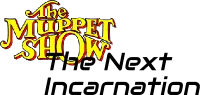
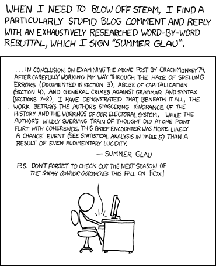

Humour Section Menu


Muppets: Summer Glau & Chuck Norris as Grammar Nazis
Muppets!
Abstract
The Muppets Show hosts Summer Glau and Chuck Norris mashing up xkcd, Ozy and Millie’s Grammar Nazis, Chuck Norris Facts, Summer Glau Facts, etc.
The Muppets’ Show (The Next Incarnation) With Summer Glau and Chuck Norris
Node LinkAbout this screenplay
Node Link[ The Muppets’ Show (The Next Incarnation) With Summer Glau and Chuck Norris
Note: This screenplay was written by Shlomi Fish, and is original artwork. ]
[ Abstract: Chuck Norris and Summer Glau are the guests of the Muppets’ Show as two ruthless Grammar Nazis who aim to unite Grammar Europe under the reign of the Grammar Third Reich. Also crossover of xkcd: “Venting” and Chuck Norris Facts. ]
[ This text is Copyright by Shlomi Fish, 2014 and is made available under the Creative Commons Attribution-Noncommercial-ShareAlike 4.0 Unported Licence (CC-by-nc-sa) (or at your option - any later version). ]
“Meet Chuck”
Node Link[ The Muppet Show Theatre backstage. Kermit and Fozzy are there.
Chuck Norris enters through the door. ]
[ Summer Glau jumps from above the frame to the upper row and then down to where Kermit and Fozzy are standing. Applause. She is wearing a grey, military-style vest with a zipper at the front. ]
[ Miss Piggy is walking along the upper row with a fellow pig. ]
[ A shot sounds and Miss Piggy's hat is blown away. Cut to Summer Glau, who is holding a gun in her left hand. ]
[ They go out of the frame. ]
Kicking ass Grammar Nazi Style
Node Link[ Congregation of evil muppets (including the Moopets, the Ugly Song muppets, and Vincent Price’s audience of monsters ) with Grammar Nazi uniforms. Summer Glau and Chuck Norris are on the stage.
Summer Glau fires a gun in the air. The room falls silent. ]
[ The Grammar Nazi muppets respond. ]
[ "Hail Grammar" from the audience. ]
[ Summer Glau pulls out two guns and Chuck Norris holds two micro-Uzis. ]
[ Extreme slow motion as there are sudden quick shots as someone shoots all the guns out of Summer Glau and Chuck Norris's hands and those of the rest of the Grammar Nazi muppets. ]
[ Shows Lucky Luke from his back. ]
[ Everyone joins. ]
[ Applause. Cut. ]
“Can’t touch her [Stop! Summer Time]”
Node Link[ TODO: Add:
1. "You can't touch her"/"Stop! Summer time!" by M.C. Summer (M.C. Hammer’s “You can't touch this (Stop! Hammer Time!)” parody). ]
“Venting Is Us.”
Node Link[ A modern tech office whose door says: “Venting is Us.” with a large version of xkcd: “Venting”. Chuck Norris and Summer Glau are sitting inside.
 ]
[ A few muppets who look like Mafios with a human leader storm in. ]
[ Chuck Norris and Summer Glau quickly raise their hands. ]
[ Cut to the new office with a new sign of “Don’t be venting - be perfecting.” ]
Having some fun with company.
Node Link[ Kermit, Chuck Norris and Summer Glau are sitting together. ]
[ Animal starts playing the drums and shouts “Carpe Diem! Hah hah hah”. Summer Glau opens her jacket’s zipper to reveal a T-shirt with the “Useless” xkcd comic and they all start singing “7 Minutes” by Caitlin Hart, along with Hart, the Mafios, Lucky Luke, the Grammar Nazis, the Head Mafio’s niece and her friends. ]
Sources of Inspiration
"The Grammar Nazis’ Conspiracy" - a discussion prompted by an Ozy & Millie cartoon.
Problem Child - "this J. R. - he is crazier than I am".
Guns, Germs, and Steel - no one was ever able to unite Europe.